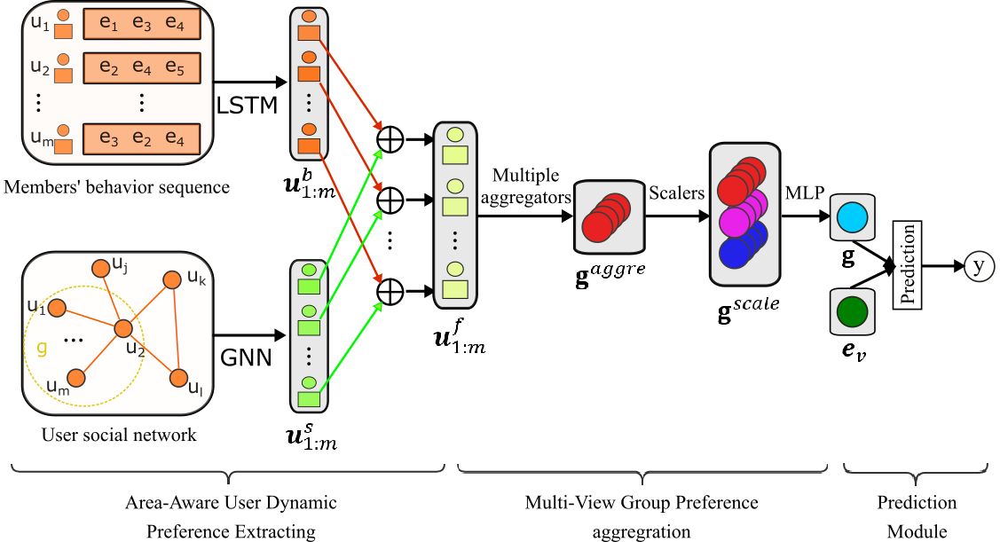

DMGPL模型介绍
下图展示了DMGPL模型的总体架构，该模型总共包含三个模块。（1）区域感知的用户动态偏好提取模块：该模块可进一步分为用户动态行为特征提取和用区域结构特征提取两个子模块，前者利用长短期记忆网络（Long Short-Term Memory，LSTM）来从用户的历史行为序列信息中提取用户动态行为特征，后者利用图神经网络（Graph Neural Network，GNN）来从用户社交网络信息中提取用户区域结构特征，然后将两种特征融合得到邻居感知的用户动态表示。（2）多视图群体偏好聚合模块：模型的核心部分，该模块通过MGA来对群体行为进行建模，MGA先用多种策略聚合用户表示来获取多视图群体聚合表示，然后基于群体伸缩度来对群体聚合表示进行放缩，最后利用多层感知器（MultiLayer Perceptron，MLP）来学习最终的群体表示。（3）预测模块：将群体、事件的向量表示作为输入，利用NCF模型来学习二者的隐藏交互向量，最终输出得到目标群体参与相应事件的概率。

{#